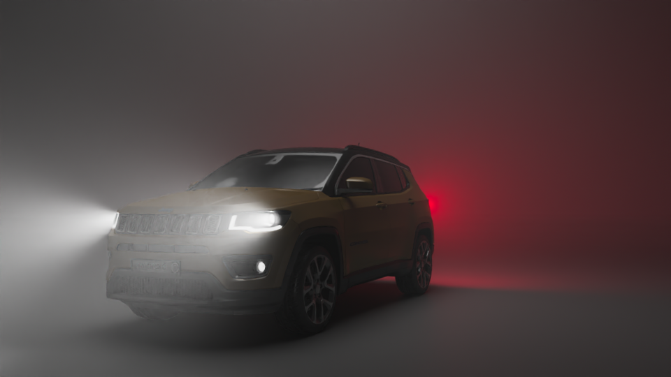
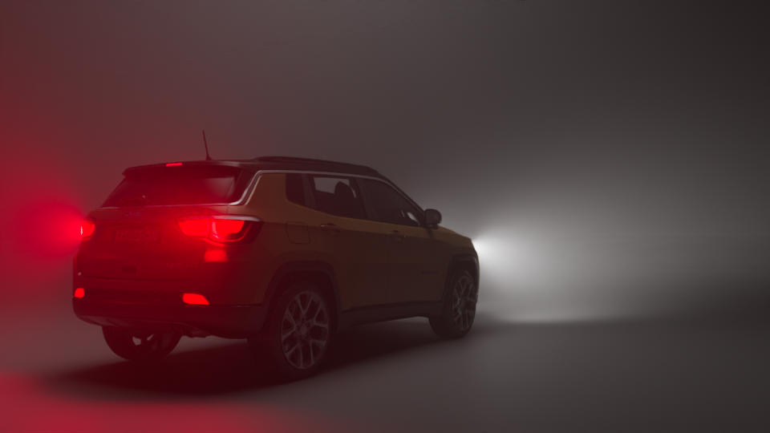

ID: #0003
LIGHTING DESIGN
CARLIGHT


Mission Brief
This project is a vehicle lighting study focused on creating a cinematic mood using headlights, taillights, and atmospheric fog. The goal was to explore light interaction with fog, reflections, and contrast to enhance realism and visual impact.
Technical Breakdown
- ▹ Lighting: Headlights, taillights, and directional lights used with volumetric fog to study light beams, glow, and depth.
- ▹ Environment: Simple studio-style setup used to emphasize the vehicle silhouette and lighting effects.
- ▹ Rendering: Scene rendered to highlight reflections, light scattering, and cinematic atmosphere for portfolio presentation.